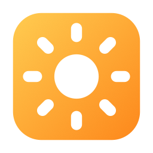
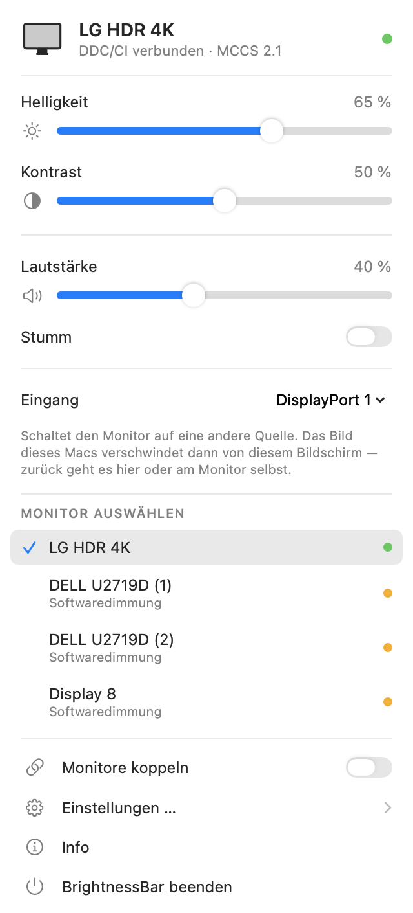
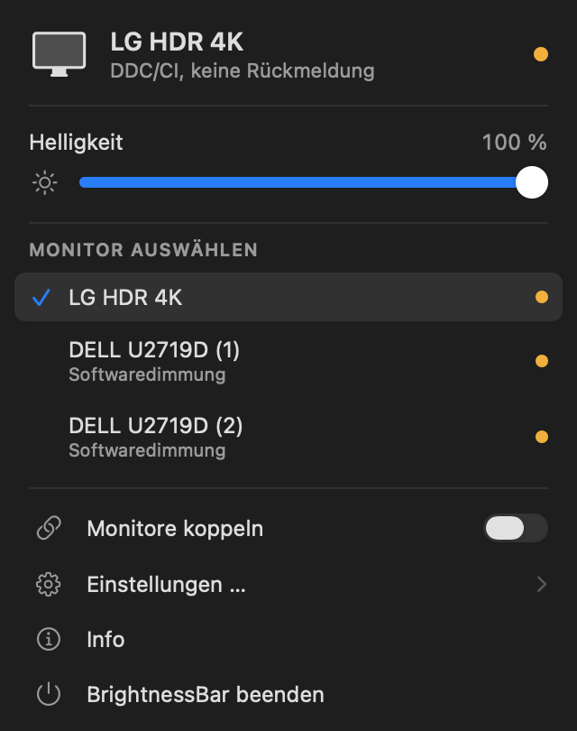

Helligkeit, Kontrast und Lautstärke externer Monitore — direkt am Gerät.
macOS regelt die Helligkeit nur bei internen Panels und Apples eigenen Displays. Bei einem gewöhnlichen externen Monitor sind die Schieber wirkungslos. BrightnessBar spricht den Monitor direkt über den I²C-Kanal seines Displayanschlusses an und setzt dort dieselben Werte wie sein OSD-Menü.
Braucht macOS 14 oder neuer und einen Mac mit Apple Silicon. Nicht notarisiert — beim ersten Start Rechtsklick → Öffnen.


Regelt Helligkeit, Kontrast und Lautstärke über DDC/CI — dieselben Werte, die das OSD-Menü setzt. Das Backlight wird wirklich dunkler, das Bild nicht nur abgedunkelt.
Findet alle angeschlossenen Displays selbst und zeigt pro Gerät, wie es angesteuert wird.
Backlight über DDC/CI
Softwaredimmung als Rückfallebene
Wirken auf den Monitor unter dem Mauszeiger, systemweit und ohne Zusatzrechte.
⌥⌘↑ heller ⌥⌘↓ dunkler mit ⇧ in feineren Schritten
Monitorlautsprecher über DisplayPort oder HDMI melden macOS oft gar keine Lautstärkeregelung — die Tasten zeigen dann nur das durchgestrichene Symbol. Über DDC funktioniert es trotzdem.
Die Lautstärketasten greifen nur, wenn der Ton auch wirklich zum Monitor geht. Kopfhörer und Lautsprecher bleiben bei macOS.
Helligkeit, Kontrast, Lautstärke und die Tastenkürzel laufen ohne jede Berechtigung. Bildschirmaufnahme wird nie verlangt.
Nur wer zusätzlich die Medientasten der Tastatur belegen will, erteilt einmalig die Freigabe für Bedienungshilfen. Die Funktion ist standardmäßig aus.
Anmeldestart, optionales Dock-Symbol, Farbe der Regler, Softwaredimmung als Rückfallebene — und ein Einstellungsfenster, das jede Option erklärt.